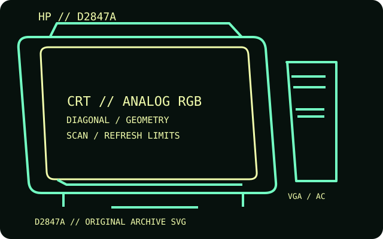

[ INDIVIDUAL COMPONENT // DISPLAYS ]
HP D2847A 21-inch Color Monitor
A Hewlett-Packard 21-inch FD Trinitron multisynchronous monitor, also known by the P1110 family designation.

IDENTIFICATION: Match the complete model and regional suffix on the rear label. Published CRT timing limits do not guarantee a particular used unit's condition; verify the tested host, cable and displayed mode.
Specifications
| Catalog subcategory | CRT displays |
|---|---|
| Exact product / family | HP D2847A 21-inch Color Monitor |
| Tube diagonal & image geometry | 21-inch nominal FD Trinitron tube with a 19.8-inch viewable image and 0.25 mm dot pitch; 4:3 geometry. The manual describes full-scan edge-to-edge imaging and controls for size, position, shape and convergence. |
| Resolution & refresh | Documented multisync range is 30–107 kHz horizontal and 50–160 Hz vertical; 1600 × 1200 is a supported high-resolution mode (refresh depends on timing). Do not assume every mode in that envelope is valid. |
| Video inputs | One 15-pin D-sub analog RGB (VGA) input. No digital input; the monitor's multisync behavior depends on the host generating valid analog timings. |
| Power | 100–240 V AC, 50/60 Hz; VESA/DPMS power-saving states are supported. HP's user guide directs users to the unit's rear label for its exact regional electrical rating rather than giving a single universal wattage. |
| Host compatibility | Compatible with HP and other PC systems that provide analog VGA within the monitor's horizontal and vertical scan limits. A digital-only computer requires an active converter; verify the selected resolution and refresh before use. |
Identification and compatibility notes
D2847A is a chassis/model identifier and P1110 is a related retail family name. Verify the complete rear-label model and mains rating because regional versions may vary.
Record the rear-label model, regional voltage rating, video connector used, source timing, adapter chain, visible image area and geometry/convergence condition. CRTs contain hazardous high-voltage circuits and heavy components; internal service belongs to qualified technicians.
Manufacturer documentation and sources
- HP — D2847A / D2847W 21-inch monitor user guideHP-branded user guide identifying the tube, viewable area and controls.
- HP — D2847A user manualModel-specific manual and operating guidance.